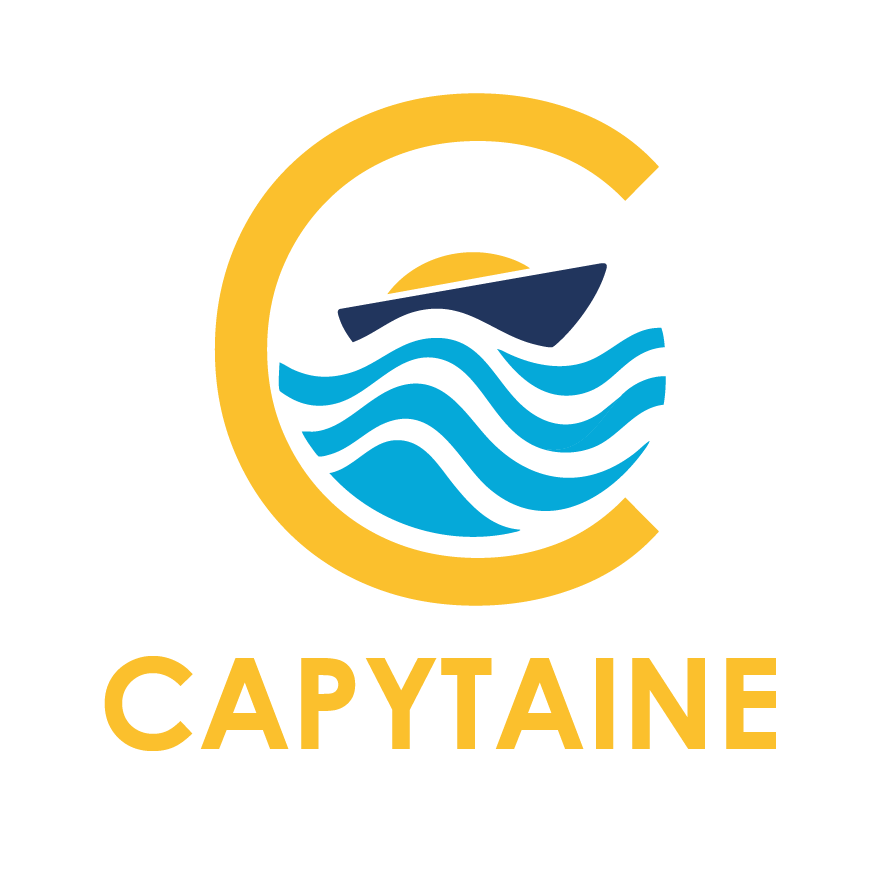

Capytaine: a Python-based linear potential flow BEM solver¶

Simulate the interaction between water waves and floating bodies in frequency domain — a full rewrite of the reference open-source sea-keeping software Nemoh.
Programmable interface
Well-documented and easy-to-use, while being flexible to integrate your workflow.
Free access and transparent
Apache-licensed software: install everywhere without bothering about a license token.
21st century computing
Experimenting with modern scientific computing: check our prototype GPU backend for 20x speedup.
Version 3.1.dev0, released Nov 20, 2026.
Installation, quickstart, tutorials and detailed usage guides.
A cookbook of beginner to advanced example scripts.
How to cite Capytaine in your publications.
Comparison with other BEM solvers on several geometries.
The mathematical background behind the BEM solver.
Contribute to Capytaine: codebase overview and testing.
Professional support available from Mews Labs
Mews Labs is a 35+-people team of engineers and data scientists working on scientific computing, machine learning and artificial intelligence. Beside Capytaine development, we help industries solve complex modelling and optimization problems and integrate data science and AI toolchains in their workflow. Contact us for training, support or new features development in Capytaine.
Contact Mews Labs · contact@mews-labs.com
For free community support, ask on the Github discussion page or open a Github issue — please do not contact the developers directly by email, unless you are looking for private paid support.
Past and present sponsors:
Capytaine is developed by Matthieu Ancellin with the welcome help of several contributors, and is available on Github.
Since April 2022, its development is funded by the Alliance for Sustainable Energy, LLC, Managing and Operating Contractor for the National Renewable Energy Laboratory (NREL) for the U.S. Department of Energy; since April 2025, also by Mews Labs and BPI France; and from April 2017 to March 2019, at University College Dublin (UCD), by Science Foundation Ireland (SFI) under Marine Renewable Energy Ireland (MaREI).
It is based on version 2 of Nemoh, developed by Gérard Delhommeau, Aurélien Babarit et al. (École Centrale de Nantes) and distributed under the Apache License 2.0.
Since version 3, Capytaine is licensed under the Apache License, Version 2.0.
This documentation is licensed under the Creative Commons Attribution-ShareAlike 4.0 International License  .
.
The boat mesh in the animation above is in the public domain.